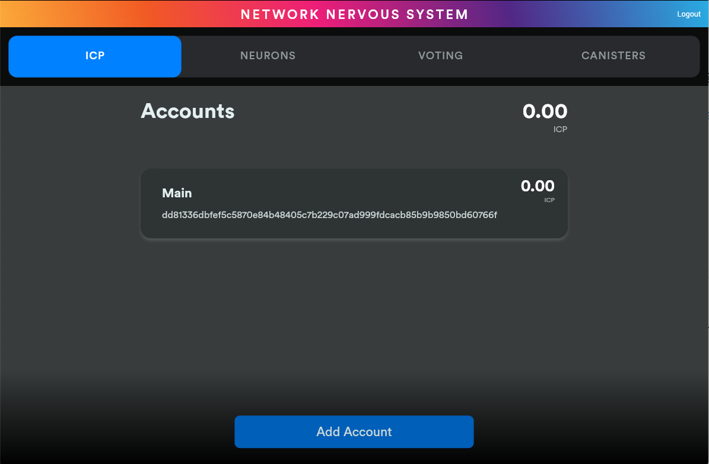
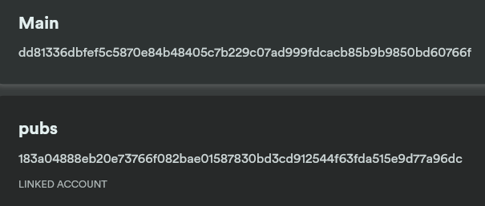
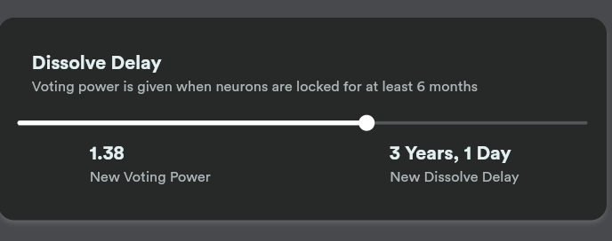
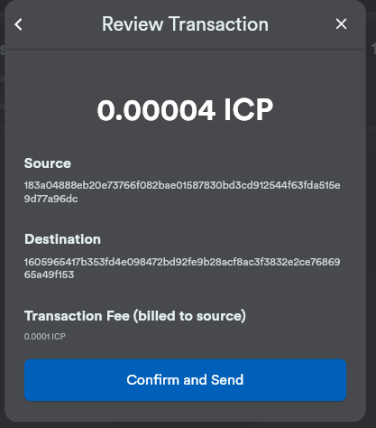
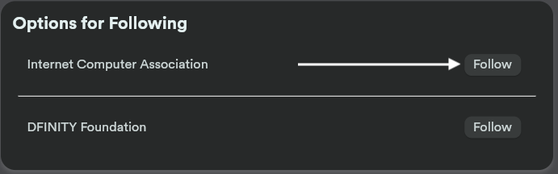

Network Nervous System Dapp クイックスタート
Internet Computer の構成と動作に対するすべての変更は、Network Nervous System（NNS）と呼ばれる、アルゴリズムによるガバナンス・システムによって制御されています。 NNSは Internet Computer ブロックチェーンの構成のすべての側面を制御し、多くのネットワーク管理操作を実行する責任を負っています。例えば、Network Nervous System（NNS）は次のような役割を担っています：
-
ネットワークに計算能力を提供するノードが使用するプロトコルやゲストオペレーティングシステムのソフトウェアのアップグレード。
-
ネットワークに新しいノードオペレーターとマシンを導入。
-
ネットワーク容量を増加させるための新しいサブネットの作成。
-
ネットワーク負荷のバランスをとるためのサブネットの分割。
-
計算能力に対してユーザーが支払わなければならない金額を制御するパラメーターの設定。
-
Canister のアクティビティとノードのパフォーマンスを監視し、悪意のある行動や統計的な逸脱を監視。
-
ネットワークを保護するために悪意のあるソフトウェアやパフォーマンスの低いノードの停止。
ネットワークに対する変更や更新の要望は、プロポーザル という形で NNS に提出されます。 NNS は Neuron ホルダーによる投票活動に基づいて、プロポーザルの採用・不採用を決定します。
Neuron とは？
ネットワーク参加者がプロポーザルに投票できるようにするには、ICP ユーティリティトークンのステークを一定期間ロックして、Neuron と呼ばれるエンティティを作成する必要があります。
Neuron は ICP ユーティリティトークンのステークを表すため、台帳 Canister アカウント と台帳アカウントを制御する Principal ID も表します。
Neuron は、ロックアップ 期間と呼ばれる特定の期間、それらが表す ICP ユーティリティトークンを交換できないようにすることで、Internet Computer の責任あるガバナンスに必要な安定性を提供します。
次の図は、Neuron を作成するためのワークフローと、Neuron と台帳 Canister の関係を簡略化したものです。

ガバナンスと投票報酬
個人または組織が ICP ユーティリティトークンを Neuron にロックアップすると、Neuron ホルダーはガバナンスの問題をプロポーザルにし、投票することができます。 また、参加を促すために、Neuron ホルダーは、ロックアップした ICP ユーティリティトークンの数量とロックアップ期間の長さ（最大8年間）に比例して、投票に対して報酬を得ます。
Neuron のステーキングをアンロックする
ネットワーク参加者が Neuron を作成した後、ロックされた ICP ユーティリティトークンの残高は Neuron を完全に 溶解 (dissolving)することによってのみ解除することができます。 ロック状態 では、Neuron はロックアップ期間に相当するゼロ以外の固定 溶解遅延 (dissolve delay)を有します。 たとえば、100 ICP ユーティリティトークンのステークを5年間ロックアップしているとします。 この設定で Neuron を正常に作成した後、あなたの溶解遅延は5年です。
時間が経つにつれて減少する溶解遅延をもとに、Neuron を完全に溶解するのにかかる時間を 溶解タイマー (dissolve timer)で決定します。
溶解タイマーがゼロになると、Neuron を作成した ICP ユーティリティトークンホルダーの Neuron のオーナーまたは、認証されたカストディアンが、Neuron を溶解して ICP ユーティリティトークン残高のロックを解除することができます。
溶解した Neuron は存在しなくなり、その Neuron が表現していた ICP ユーティリティトークンのステークが適切な台帳 Canister アカウントに戻されます。
Internet Computer に接続する
Network Nervous System (NNS) Dapp を使って Internet Computer に接続する場合：
-
ブラウザを開き、Network Nervous System (NNS) Dappに移動します。
-
Internet Identity に接続するために Login をクリックします。
まだ登録していない場合は、Register with Internet Identity をクリックして登録します。
Internet Identity には、複数のデバイスと認証方法を追加することを強くお勧めします。例えば、パソコンや携帯電話などの複数の物理デバイスをセキュリティキーで登録し、それらのデバイスやデバイス上で動作するブラウザがサポートする認証オプションを使用します。 Internet Identity の作成について詳しくは、Internet Identity の使用方法 を参照してください。
登録後、Login をクリックすると、Anchor と登録した認証方法（セキュリティキーや指紋など）を使用して認証することができます。
-
Proceed をクリックすると、Network Nervous System (NNS) Dapp にアクセスできます。
アカウントを追加する
Internet Identity を使用してログオンすると、Internet Computer 台帳にあなたのための メインアカウントが作成されます。
ICP ユーティリティトークンが開発者 Identity、つまり DFINITY Canister SDK dfx コマンドラインインターフェースによって作成された Identity に関連付けられている場合、メインアカウントには、ICP ユーティリティトークンの残高として0.00が表示されます。
たとえば、以下のようになります：

トークンを転送する前に、1つ以上のリンクされたサブアカウントを作成するか、アカウントにハードウェアウォレットをアタッチすることができます。
ICP ユーティリティトークンを管理するためのアカウントを追加するには：
-
ブラウザを開き、Network Nervous System (NNS) Dappに移動してください。
-
Login をクリックし、Internet Identity を使用して接続します。
-
ID番号（Anchor）を確認し、Login をクリックして、登録したデバイスと認証方法を使用して認証します。
-
Network Nervous System (NNS) Dapp にアクセスするには、Proceed をクリックします。
-
デフォルトの ICP タブで、Add Account をクリックします。
-
追加するアカウントの種類を選択します。
-
New Linked Account は、元帳のメインアカウントのアドレスにリンクされた新しいサブアカウントを作成します。
-
Attach Hardware Wallet は、台帳上のメイン口座のアドレスにハードウェアウォレットを追加します。
-
-
New Linked Account をクリックし、Account Nameを入力し、Create をクリックします。

ICP ユーティリティトークンのアカウント間送金をする
ICP ユーティリティトークンの保持にセルフカストディを選択し、トークンが登録した Internet Identity ではなく、開発者 Identity に関連付けられている場合で Network Nervous System (NNS) Dapp を使って管理したい場合は、ICP ユーティリティトークンを自分のアカウントに転送する必要があります。
開発者 Identity で管理された ICP ユーティリティトークンを転送するには：
-
ローカルコンピュータでターミナルシェルを開きます。
-
以下のコマンドを実行して、台帳アカウントを制御する Identity を使用していることを確認します：
dfx identity whoamiほとんどの場合、現在
defaultの開発者 Identity を使用していることが確認できるはずです。 たとえば、以下のように表示されます：default
-
次のコマンドを実行して、現在の Identity の Principal IDのテキスト表現を表示します：
dfx identity get-principalこのコマンドは、次のような出力を表示します：
tsqwz-udeik-5migd-ehrev-pvoqv-szx2g-akh5s-fkyqc-zy6q7-snav6-uqe
-
以下のコマンドを実行して、自分の Identity に関連する台帳アカウントの現在の残高を確認します：
dfx ledger --network ic balance -
以下のようなコマンドを実行して、ICP ユーティリティトークンを自分のメインアカウントまたは作成したリンク先のサブアカウントに転送します：
dfx ledger --network ic transfer <destination-account-id> --icp <ICP-amount> --memo <numeric-memo>例えば、以下のようなアカウントがあるとします：

ICP ユーティリティトークンを1つだけ
Mainアカウントに転送したい場合は、以下のコマンドを実行します：dfx ledger --network ic transfer dd81336dbfef5c5870e84b48405c7b229c07ad999fdcacb85b9b9850bd60766f --memo 12345 --icp 1
また、ICP ユーティリティトークンを1つだけ
pubsアカウントに転送したい場合は、以下のコマンドを実行します：dfx ledger --network ic transfer 183a04888eb20e73766f082bae01587830bd3cd912544f63fda515e9d77a96dc --icp 1 --memo 12346
この例では、
--icpコマンドラインオプションを使用して、ICP ユーティリティトークンを整数で転送する方法を説明します。-
また、
--e8sオプションを単独で、あるいは--icpオプションと組み合わせて使用すると、ICP ユーティリティトークンの端数を e8s と呼ぶ単位で指定することができます。 -
また、
--amountオプションを使用すると、転送する ICP ユーティリティトークンの数を小数点以下8桁まで、例えば5.00000025のように指定することができます。
宛先アドレスは、Internet Computer ネットワーク上で動作する台帳 Canister のアドレス、Network Nervous System Dapp を使って追加したアカウント、取引所にあるウォレットのアドレスのいずれかにすることができます。
ICP ユーティリティトークンを Network Nervous System Dapp のアカウントに転送した場合、取引の反映を確認するためにブラウザを更新する必要がある場合があります。
dfx ledgerのコマンドラインオプションの使い方については、dfx ledger を参照してください。 -
Neuron で ICP ユーティリティトークンをステーキングする
ICP ユーティリティトークンを Network Nervous System Dapp に転送すると、Network Nervous System Dapp を使用して、Internet Computer 上で Neuron の作成と管理、プロポーザルへの投票、Canister の作成ができるようになります。
Neuron はガバナンスに参加し報酬を得るために必要です。 Neuron を作成するには、ある程度の数の ICP ユーティリティトークンを一定期間ロックする必要があります。Neuron を作成するために必要な最小の出資金は、1 ICP ユーティリティトークンです。 ステークをロックする期間は、6ヵ月から最長8年まで設定できます。
ICPユーティリティトークンをステークするには：
-
ブラウザを開き、Network Nervous System (NNS) Dapp に移動してください。
-
Login をクリックし、Internet Identity を使用して接続します。
-
ID番号（Anchor）を確認し、Login をクリックして、登録したデバイスと認証方法を使用して認証します。
-
Network Nervous System (NNS) Dapp にアクセスするには、Proceed をクリックします。
-
Neurons をクリックし、Stake Neuron をクリックします。
-
ステークする ICP ユーティリティトークンの数を入力し、Create をクリックします。
-
ステークがロックされている時間の長さを制御するために、Neuron の溶解遅延を設定し、Update Delay とクリックします。
例：

-
Yes, I’m sure をクリックしてロックアップ期間を確認し、ウィンドウを閉じて新しく作成された Neuron のプロパティを確認します。

Neuron 作成後にできること
ステーキングロックし、Neuron を作成した後、次のことができます。
-
溶解遅延タイマー(dissolve delay timer)を開始するには、Start Unlock をクリックします。
-
Increase Dissolve Delay をクリックして、溶解遅延タイマーを増やします。
-
Lockup をクリックすると、ロック解除のカウントダウンを開始した後、溶解遅延を停止します。
-
ステークしている ICP ユーティリティートークンの数を増やします。
溶解遅延の開始と停止
新しい Neuron を作成しても、溶解遅延タイマーは自動的に開始されません。 タイマーのカウントダウンを開始するには、Start Unlock をクリックして明示的に開始する必要があります。
例えば、溶解遅延を1年に設定し、すぐにカウントダウンを開始したい場合は、Neuron を作成する過程で Start Unlock をクリックします。 気が変わって、現在進行中のカウントダウンを停止したい場合は、Lockup をクリックします。 Lockup をクリックして溶解遅延を停止した後、Start Unlock をクリックすると、既存の溶解遅延期間(dissolve delay period)を変更せずにカウントダウンを再開することができます。 既に進行中のカウントダウンを継続し、ロックアップ期間を延長したい場合は、Increase Dissolve Delay をクリックし、より長い溶解遅延を選択することができます。
既存の Neuron への ICP ユーティリティトークンを追加する
Neuron を作成した後、その Neuron に賭けた ICP ユーティリティトークンの数を増やして、投票権と報酬を増やすことができます。 たとえば、最初に少数の ICP ユーティリティトークンを賭け、その後追加でトークンを購入することにした場合、新しい Neuron を作成するか、既存の Neuron を追加(top-up)するオプションがあります。
既存の Neuorn のステークを増やすには：
-
Neuron で ICP ユーティリティトークンをステーキングする の手順で、Network Nervous System (NNS) Dapp を使って元の Neuron をステークします。
-
Internet Computer Association でトランザクションを検索します。取引ダッシュボード で取引を検索し、Neuron アドレスを取得します。
ICP のメイン台帳アカウント ID を使って、トランザクションを検索することができます。
-
Network Nervous System (NNS) Dapp に戻り、New Transaction をクリックします。
-
トランザクションダッシュボードから Neuron アドレスを Destination アドレスフィールドに貼り付け、Continue をクリックします。
-
指定した Neuron に追加したい ICP ユーティリティトークンの量を入力し、Continue をクリックします。
-
取引内容を確認し、Confirm and Send をクリックします。

-
完了した取引を確認し、Close をクリックします。
-
増加したステークを確認するには、Neurons タブをクリックします。
以下のルールを設定する
ガバナンスへの積極的な参加は、Internet Computer の長期的な健全性を保つための重要な要素です。 またプロポーザルに対する投票も、ICP ユーティリティトークンを Neuron に固定する見返りとして受け取る報酬を計算する上で重要な要素になります。
しかし、NNS に提出されたすべてのプロポーザルに直接投票することは、いくつかの課題をもたらします。 たとえば、あなたが不在のときにプロポーザルが提出されて投票が必要になったり、評価するための専門知識が不足している変更がプロポーザルされたりする可能性があります。 これらの課題に対処するために、Neuron のグループの投票に従うことによって、プロポーザルを採用または拒否するために自動的に投票するように Neuron を構成することができます。
報酬を最大化するためには、自分と利害が一致するアクティブな Neuron ホルダーをフォローして、できるだけ多くのプロポーザルに投票する必要があります。例えば、SubnetManagement などのトピックでは Internet Computer Association (ICA) を、Governance などのトピックでは他の Neuron ホルダーをフォローすることができます。
他の Neuron ホルダーをどのようにフォローするかを設定するには：
-
ブラウザを開き、Network Nervous System (NNS) Dapp に移動してください。
-
Login をクリックし、Internet Identity を使用して接続します。
-
ID番号（Anchor）を確認し、Login をクリックして、登録したデバイスと認証方法を使用して認証します。
-
Network Nervous System (NNS) Dapp にアクセスするには、Proceed をクリックします。
-
Neurons をクリックし、特定の Neuron 識別子のリンクをクリックして、プロパティを表示します。
-
Followees の Edit Followees をクリックします。
-
プロポーザルトピックを選択します。
例えば、「ガバナンス」トピックを展開し、Enter Followee をクリックします。
-
フォローする Neuron ホルダーを選択し、Follow をクリックします。
例えば、Internet Computer Associationの場合は、Follow をクリックします。

Neuron ホルダーが現在のフォローリストに追加されました。
-
自分の Neuron の投票を、他の Neuron ホルダーの投票に自動的に従わせたいトピック毎にこれを繰り返します。
溶解後 Neuron(dissolved neuron)をアカウントに払い出す
Neuron の溶解遅延タイマーが 0 になると、その Neuron のステークを払い出し、ロックされた ICP ユーティリティトークン残高を指定した台帳アカウントに転送することができます。 この手順を実行すると、Neuron の識別子とその台帳の履歴はガバナンス Canister から永久に削除されます。
Neuron を払い戻し、その ICP ユーティリティトークンを払い戻すには：
-
ブラウザを開き、Network Nervous System (NNS) Dapp に移動してください。
-
Login をクリックし、Internet Identity を使用して接続します。
-
ID番号（Anchor）を確認し、Login をクリックして、登録したデバイスと認証方法を使用して認証します。
-
Network Nervous System (NNS) Dapp にアクセスするには、Proceed をクリックします。
-
Neurons をクリックし、溶解遅延期間が終了した Unlocked neuron をクリックします。
例：

-
Disburse をクリックする。
例：

-
ICP ユーティリティトークンを受け取るためのアドレスを入力するか、アカウントを選択します。
例えば、
dev-projectsのリンクアカウントを選択することができます。 -
トランザクション情報を確認し、Confirm and Send をクリックします。
例えば、リンク先アカウント
dev-projectsの意図したアドレスと一致する宛先アドレスをクリックします。
-
完了した取引を確認し、Close をクリックします。
例：

ICP ユーティリティトークンを Internet Computer 台帳 Canister のいずれかのアカウントに転送した場合、ICP タブをクリックすると、新しい残高が反映されていることを確認できます。 例えば、以下のようになります。

新しい Neuron を産出する(spawn)
プロポーザルに直接、または他の Neuron の投票に従って投票すると、あなたの Neuron に関する成熟度が上がり、ガバナンスに参加することで得られる報酬が増加します。 ロックされたステークに対する成熟度が最低閾値の1 ICP に達すると、新しい Neuron を産出(spawn)することができます。 産出操作により、台帳に新たな残高の ICP をロックした Neuron を作成します。
たとえば、100 ICP ユーティリティ トークンを含む Neuron があり、それが 10 パーセントの満期である場合、約 10 ICP トークンを新たに含む Neuron を産出することができます。100個の ICPトークンを含む Neuron が産出のための最低閾値に達するには、その成熟度が1%より大きくなる必要があります。
既存の Neuron から新しい Neuron を生成した後、既存の Neuron の成熟度はゼロになります。
既存の Neuron から新しい Neuron を生成するには：
-
ブラウザを開き、Network Nervous System (NNS) Dapp に移動してください。
-
Login をクリックし、Internet Identity を使用して接続します。
-
ID番号（Anchor）を確認し、Login をクリックして、登録したデバイスと認証方法を使用して認証します。
-
Network Nervous System (NNS) Dapp にアクセスするには、Proceed をクリックします。
-
Neurons をクリックし、新しい Neuron を生成するために必要な最小成熟度に達した Neuron をクリックします。
-
Spawn Neuron をクリックします。
新しく生成された Neuron の溶解遅延は1日であることに留意してください。 ICP ユーティリティトークンをアンロックして価値を集めるか、溶解遅延を長くして追加報酬を集めるかの選択肢を与えてくれます。
成熟と新しい Neuron の産出についてより詳しい情報は以下の記事を参照してください。
プロポーザルに対する投票
Network Nervous System(NNS) Dapp でフィルターを使用することで、直接または他の Neuron 関係者をフォローし、表示および投票するプロポーザルタイプとプロポーザルトピックを選択することができます。 たとえば、データセンターのアイデンティティやノードオペレータなどのネットワーク参加者に関わるすべてのプロポーザルをレビューして投票したいが、国際通貨基金（IMF）の特別引出権（SDR）で測定される ICP の現在の市場価値に関連するプロポーザルは表示したくない場合は、ParticipantManagement トピックフィルターを選択し、ExchangeRate トピックフィルターの選択を解除することで可能です。
手動でプロポーザルに投票するためには：
-
ブラウザを開き、Network Nervous System (NNS) Dapp に移動してください。
-
Login をクリックし、Internet Identity を使用して接続します。
-
ID番号（Anchor）を確認し、Login をクリックして、登録したデバイスと認証方法を使用して認証します。
-
Network Nervous System(NNS) Dapp にアクセスするには、Proceed をクリックします。
-
Voting をクリックします。
掲載されていプロポーザルをクリックすると、プロポーザルの簡単な説明、プロポーザルに関する追加情報を閲覧するためのリンク、プロポーザルの採択または否決のための投票数、あなたの Neuron による投票数などの情報を表示することができます。
-
トピック、報酬の状況、およびプロポーザルの状況のフィルターを使用して、表示されるプロポーザルのリストを制御します。
例えば、Topics リストを開いて、現在表示されていないプロポーザルリストに含めたいプロポーザルトピックがないか確認したり、Proposal Status を開いて、開いているすべてのプロポーザルが表示されているかどうかを確認したりすることができます。
-
公開中のプロポーザルをクリックすると、そのプロポーザルの詳細と、自分の Identity に関連付けられた Neuron の投票権が表示されます。
-
投票に使用する投票権のある Neuron 識別子を選択します。
-
Adopt または Reject をクリックして、投票します。
投票と投票報酬の詳細については、以下の記事を参照してください：
プロポーザルを提出する
現在、Network Nervous System へのプロポーザルの提出は DFINITY Canister SDK コマンドラインインターフェース (dfx) を使って governance Canister への呼び出しを行う方法でのみ行うことができます。
gvernance Canister を使用するための独立したコマンドラインツール (icx-nns) は現在開発中で、この機能は Network Nervous System (NNS) Dapp でもすぐに利用できるようになる予定です。
しかし、すぐにでもプロポーザルを提出したい場合は、icx-nns リポジトリからリリースをダウンロードすれば、 icx-nns コマンドラインツールの予備バージョンにアクセスすることができます。
Cycle とともに Canister をデプロイする
スマートコントラクトに似た Canisters を作成し管理するには、Cycle を利用できるようにする必要があります。 Network Nervous System (NNS) Dapp は、ICP ユーティリティトークンを Cycle に変換し、Cycle を特定の Canister 識別子に添付できるようにして、Canister を作成および管理するための便利な方法を提供します。
新しい Canister を作成するには：
-
ブラウザを開き、Network Nervous System (NNS) Dapp に移動してください。
-
Login をクリックし、Internet Identity を使用して接続します。
-
ID番号（Anchor）を確認し、Login をクリックして、登録したデバイスと認証方法を使用して認証します。
-
Network Nervous System (NNS) Dappにアクセスするには、Proceed をクリックします。
-
Canisters をクリックし、Create or Link Canister をクリックします。
-
Create New Canister をクリックし、新しい Cycle Wallet Canister を作成します。
既に Cycle Wallet Canister をお持ちの方は、Link Canister to Account をクリックすると、 Network Nervous System (NNS) Dapp で既存の Canister 識別子をあなたのアカウントにリンクさせることができます。
-
ICP ユーティリティトークンを保有しているアカウントのうち、1つをソースアカウントとして選択します。
例えば、メイン アカウントと Dev-Projects アカウントの両方を持っている場合、そのアカウントで Cycle に変換したい ICP ユーティリティトークンがある場合は、Dev-Projects アカウントを選択するとよいでしょう。
-
Accout をクリックして、Cycle に変換したい ICP ユーティリティトークンまたは e8s の数を入力し、Review Cycles Purchase をクリックします。
指定する量は、新しい Canister 識別子を作成するために必要な最小限の2 T（2兆）Cycle より大きい値に変換する必要があります。 たとえば、以下のようになります。
-
ICP ユーティリティトークンから Cycle の詳細を確認し、Confirm をクリックして続行します。
Comfirm をクリックすると、次の内容を確認できます。 - 新しい Canister の識別子 - その Canister が使用できる Cycle 数 - 新しい Canister の完全な管理権限を現在持っているコントロール Principal。
+ Canister のコントローラとして使用される Principal を変更するには、 Change Controllers をクリックします。
+ Canister に Cycle を追加するには、Add Cycles をクリックします。
-
Canisters タブに戻り、作成した Canister を確認します。
例えば、以下のようになります。